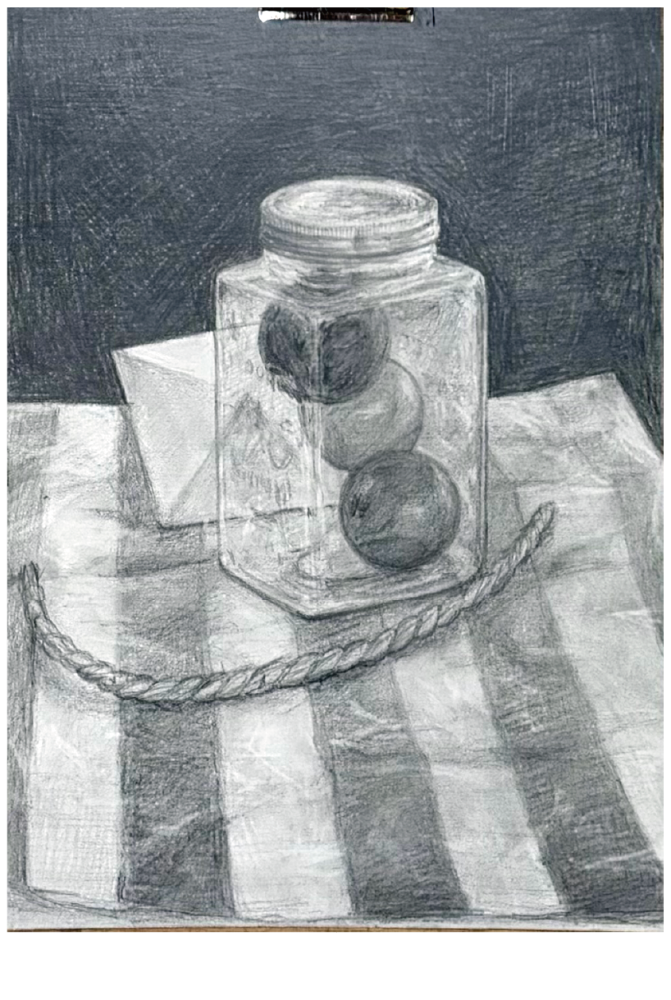
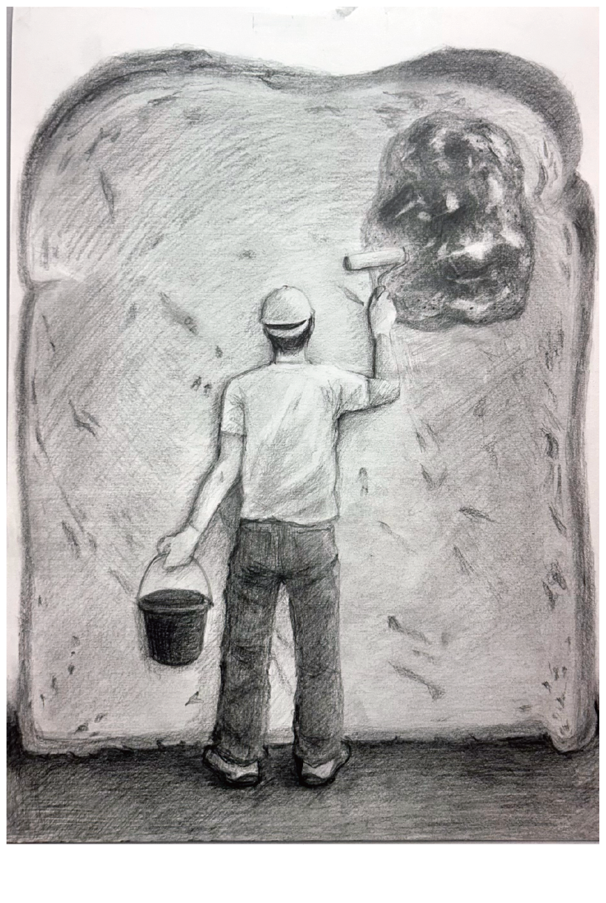
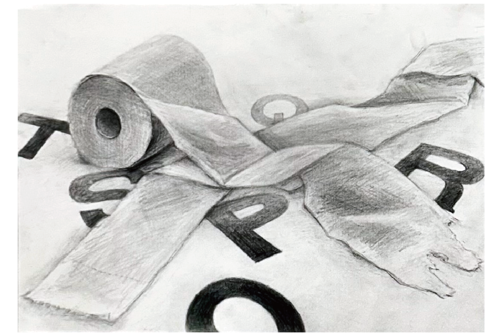
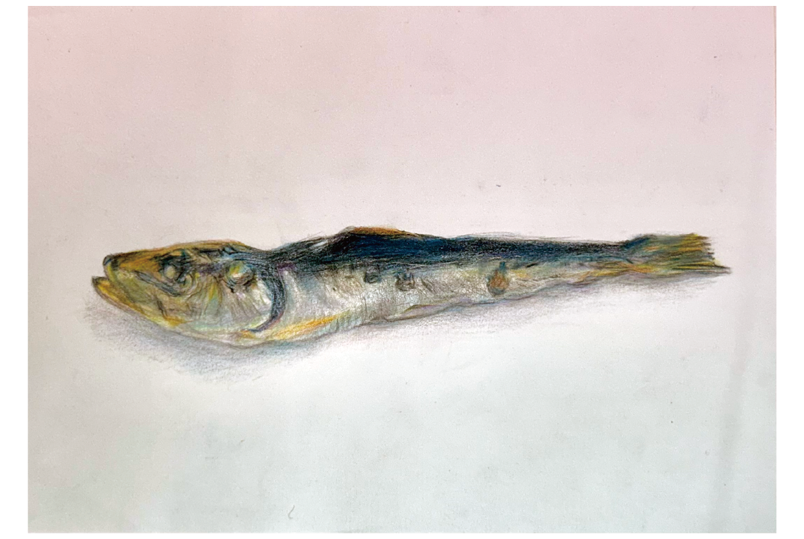

WORKS
作品
デッサン
静物デッサン

[制作期間] 2週間
[使用画材] 鉛筆
５つのモチーフを観察しながら描画した静物デッサンです。
透明なプラスチック素材で生じる光や影、ズレの表現に力を入れました。
赤、青、黄色のボールの色相の差をモノクロに落とし込むところが、苦労した点です。
空想デッサン

[制作期間] 3週間
[使用画材] 鉛筆
食パンをモチーフに使った空想デッサンです。作業服を着た人物が壁にペンキを塗るように、パンにジャムを塗る様子を描きました。
パンの質感と、ジャムの照りの対比を意識しました。
鉛筆デッサン

[制作期間] 2週間
[使用画材] 鉛筆
サンテクノカレッジに入学して初めて描いたデッサンです。
明度による奥行きの表現と、トイレットペーパーの柔らかい質感の表現に力を入れました。このデッサンで、余白の使い方と、黒の使いどころの重要性を学びました。
細密デッサン

[制作期間] 1週間
[使用画材] 色鉛筆
実物の煮干しを観察し、色鉛筆の線を少しずつ重ねながら質感の表現を模索しました。